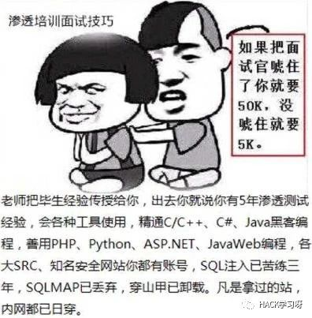
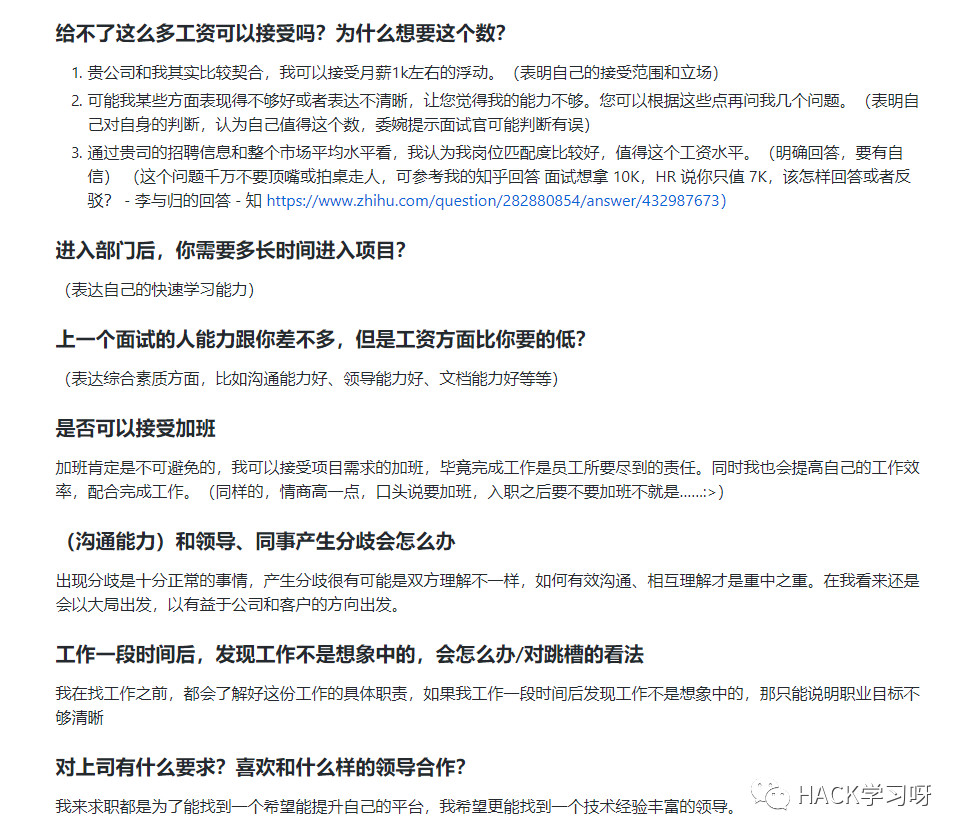

渗透测试以及安全面试的经验之谈


常见面试题：
介绍一下自认为有趣的挖洞经历（或CTF经历）
你平时用的比较多的漏洞是哪些？相关漏洞的原理？以及对应漏洞的修复方案？
你平时使用哪些工具?以及对应工具的特点?
如果遇到waf的情况下如何进行SQL注入/上传Webshell怎么做？
谈谈Windows系统与Linux系统提权的思路？
列举出您所知道的所有开源组件高危漏洞
描述一个你深入研究过的 CVE 或 POC
SQLi
添加单引号，双引号，order by, rlike,sleep，benchmark，运算符，修改数据类型，报错注入语句测试
通俗讲，gbk，big5等编码占了两个字节，sql语句进后端后对单引号等进行了转义，转义\为%5C，当前面的%xx与%5C能结合成两个字节的字符时候，就可以使后面的单引号逃逸，从而造成注入。比较常见的gbk，%df' => %df%5c%27 => 運' 。已经可以单引号了，剩下的就和普通注入差不多了。 修复方式通过设置MYSQL数据库字符集utf8mb4，PHP字符集utf-8。
这种太多了，网上一搜一大把。主要还是看目标站点的过滤和防护，常见bypass可以是/**/替换空格，/!00000union/ 等于union，或者利用前端过滤，添加尖括号<>。大小写什么的都太常见了，如果过滤了函数或者关键字，可以尝试其他能达到效果的同等函数，关键字比如or 1=1可以用||1替换，或者用运算符比如/，%达到相同的效果。总之，还是看要求。
如果是get型，直接，sqlmap -u “注入点网址”.
如果是post型，可以sqlmap -u “注入点网址” –data=”post的参数”
如果是cookie型，X-Forwarded-For等，可以访问的时候，用burpsuite抓包，注入处用*号替换，放到文件里，然后sqlmap -r “文件地址”
5.0以下没有information_schema这个系统表，无法列表名等，只能暴力跑表名。 5.0以下是多用户单操作，5.0以上是多用户多操做。
root权限以及网站的绝对路径。
demo.do?DATA=AjAxNg==
CSRF
CSRF是跨站请求伪造攻击，XSS是实现CSRF的诸多手段中的一种，是由于没有在关键操作执行时进行是否由用户自愿发起的确认。修复方式：筛选出需要防范`的页面然后嵌入Token、再次输入密码、检验Referer。
CSRF即跨站请求伪造，以受害者的身份向服务器发送一个请求。本质上个人觉得是服务端在执行一些敏感操作时候对提交操作的用户的身份校检不到位。
防御CSRF一般是加上referer和csrf_token. 具体可以参考这篇CSRF攻击的CSRF攻击的应对之道
CSRF是跨站请求伪造攻击，由客户端发起
SSRF是服务器端请求伪造，由服务器发起
重放攻击是将截获的数据包进行重放，达到身份认证等目的
发现 test.jsp?cid=150 注入点，你有哪几种思路获取 webshell
以下链接存在 SQL注入漏洞，对于这个变形注入，你有什么思路？
mysql注入点，用工具对目标站直接写入一句话，需要哪些条件？
Mysql的网站注入，5.0以上和5.0以下有什么区别？
sqlmap如何对一个注入点注入，sqlmap如何注入一个post的包
你都了解哪些SQL注入 的bypass技巧
介绍 SQL 注入漏洞成因，如何防范？注入方式有哪些？除了数据库数据，利用方式还有哪些？
宽字符注入的原理？如何利用宽字符注入漏洞，payload如何构造及修复方案？
如何判断SQL注入，有哪些方法，说说你最常用的
Domain
如果两个页面的协议，端口和域名相同，则可认为是同源。
读取cookie， LocalStorage 和 IndexDB 读取DOM元素 发送AJAX请求
大概就是子域相同，主域不同的意思吧，可以通过在两房都设置document.domain来解决跨域。
主域相同时跨域，可以像上面那样设置document.domain.
主域不同时，可以通过jsonp，websocket，在服务端设置CORS进行跨域请求。H5新增window.postMessage方法解决跨域请求。
通过<script>像服务器请求json数据，不受同源策略限制。
如何设置可以跨域请求数据？jsonp是做什么的？
如果子域名和顶级域名不同源，在哪里可以设置叫他们同源，解释一下什么是同源策略
同源策略，那些东西是同源可以获取到的
Ajax
ajax全名是Asynchronous JavaScript and XML ，异步的javascript和XML技术。遵循同源策略，但是可以通过jsonp等进行规避。
XSS跨站攻击
JSON和JSONP的区别？
JSONP劫持利用方式及修复方案？
JSON注入如何利用？
Ajax是否遵循同源策略？
浏览器策略
三种浏览器都遵循同源策略，内容安全策略(CSP), Cookie安全策略（httponly, Secure, Path）
CSP：Content Security Policy，内容安全策略。是繁育XSS攻击的一种安全机制，其思想是以服务器白名单的形式来配置可信的内容来源，客户端Web应用代码可以使用这些安全来源。
CSP是什么？如何设置CSP？
不同浏览器之间，安全策略有哪些不同，比如chrome，firefox，IE
XSS
XSS是跨站脚本攻击，用户提交的数据中可以构造代码来执行，从而实现窃取用户信息等攻击。修复方式：对字符实体进行转义、使用HTTP Only来禁止JavaScript读取Cookie值、输入时校验、浏览器与Web应用端采用相同的字符编码。
个人理解是对用户提交数据为进行安全的过滤然后直接输入到页面当中，造成js代码的执行。至于具体场景，有输出的地方就有可能被xss的风险。
XSS蠕虫：XSS攻击可能会造成系统中用户间的互相感染，导致整个系统用户的沦陷，能够造成这种危害的XSS漏洞成为XSS蠕虫。
1、构造一个具有自我复制的反射型XSS
2、插入评论、留言框
3、用户点击链接，链接内容指向同样的XSS向量。也就是注入了蠕虫代码的的存在存储型xss的页面。链接被点击后将继续造成蠕虫传播。
留言板/评论/文章发布/私信...
1、将本地带有破坏性的程序改名字。 2、关闭可执行文件。 3、禁止“FileSystemObject”就可以有效的控制VBS病毒的传播。具体操作方法：用regsvr32 scrrun.dll /u这条命令就可以禁止文件系统对象。 4、开启浏览器的安全设置。
github有一些现成的xss扫描内网端口的脚本，可以参考利用，再根据探测出来的信息进一步利用，比如开了redis等，再就是利用漏洞去getshell.
如何防范 XSS 漏洞，在前端如何做，在后端如何做，哪里更好，为什么？
黑盒如何检测XSS漏洞？
如果给你一个XSS盲打漏洞，但是返回来的信息显示，他的后台是在内网，并且只能使用内网访问，那么你怎么利用这个XSS？
如果叫你来防御蠕虫，你有哪些方法？
在社交类的网站中，哪些地方可能会出现蠕虫？
XSS持久化？
如果给你一个XSS漏洞，你还需要哪些条件可以构造一个蠕虫？
xss的发生场景？
XSS是什么，修复方式是？
CRLF注入的原理
CRLF是回车+换行的简称。碰得比较少，基本没挖到过这种洞，简而言之一般是可以通过提交恶意数据里面包含回车，换行来达到控制服务器响应头的效果。碰到过潜在的CRLF都是提交回车和换行之后就500了。CRLF的利用可以是XSS，恶意重定向location，还有set-cookie.
CSRF、SSRF和重放攻击有什么区别？
防御CSRF都有哪些方法，JAVA是如何防御CSRF漏洞的，token一定有用么？
CSRF漏洞的本质是什么？
CSRF是什么？修复方式？
SSRF漏洞原理、利用方式及修复方案？Java和PHP的SSRF区别？
逻辑漏洞
1)密码找回漏洞中存在密码允许暴力破解、存在通用型找回凭证、可以跳过验证步骤、找回凭证可以拦包获取等方式来通过厂商提供的密码找回功能来得到密码
2)身份认证漏洞中最常见的是会话固定攻击和 Cookie 仿冒，只要得到 Session 或 Cookie 即可伪造用户身份
3)验证码漏洞中存在验证码允许暴力破解、验证码可以通过 Javascript 或者改包的方法来进行绕过
说出至少三种业务逻辑漏洞，以及修复方式？
越权访问(水平/垂直/未授权)
谈谈水平/垂直/未授权越权访问的区别?
越权问题如何检测？
XML注入
XXE是什么？修复方案是？
XXE是XML外部实体注入攻击，XML中可以通过调用实体来请求本地或者远程内容，和远程文件保护类似，会引发相关安全问题，例如敏感文件读取。修复方式：XML解析库在调用时严格禁止对外部实体的解析。
HTML5
H5新增了不少标签，在绕过xss防御方面多了不少选择。还有就是新增了本地存储，localstorage 和session storage,可以通过xss修改本地存储达到类似一个存储xss的效果。
说说HTML5有哪些新的安全特性
* HTML5白名单要有哪些标签 参考HTML5安全问题
是否了解Java
struts2 ,spring,spring security, shiro 等
java的MVC结构都是做什么的，数据流向数据库的顺序是什么？
了解java沙箱吗？
ibats的参数化查询能不能有效的控制sql注入？有没有危险的方法可以造成sql注入？
说说两次struts2漏洞的原理
ongl在这个payload中起了什么作用？
\u0023是什么字符的16进制编码？为什么在payload中要用他？
java会不会发生执行系统命令的漏洞？java都有哪些语句，方法可以执行系统命令
如果叫你修复一个xss漏洞，你会在java程序的那个层里面进行修复？
xss filter在java程序的哪里设置？
说下java的类反射在安全上可能存在哪些问题
Java反序列化漏洞的原理?解决方案?
你都了解哪些java框架？
PHP
php的配置文件php.ini进行了修改，display_errors = On 修改为 display_errors = off时候就没有报错提示。 在php脚本开头添加error_reporting(0); 也可以达到关闭报错的作用 除了上面的，还可以在执行语句前面添加@
关闭报错，设置open_basedir，禁用危险函数，打开gpc。有具体的文章介绍安全配置这一块，属于运维的工作范围。
存在于5.3.4版本下，一般利用在文件上传时文件名的截断，或者在对文件进行操作时候都有可能存在00阶段的情况。 如filename=test.php%00.txt 会被截断成test.php，00后面的被忽略。系统在对文件名读取时候，如果遇到0x00,就会认为读取已经结束了。
个人知道的大体上分为静态检测和动态检测两种。静态检测比如查找危险函数，如eval，system等。动态检测是检测脚本运行时要执行的动作，比如文件操作，socket操作等。具体方法可以是通过D盾或者其他查杀软件进行查杀，现在也有基于机器学习的webshell识别。
php的LFI，本地包含漏洞原理是什么？写一段带有漏洞的代码。手工的话如何发掘？如果无报错回显，你是怎么遍历文件的？
php反序列化漏洞的原理?解决方案?
php webshell检测，有哪些方法
php的%00截断的原理是什么？
php.ini可以设置哪些安全特性
php里面有哪些方法可以不让错误回显？
常见中间件
IIS、Apache、nginx、Lighttpd、Tomcat
Tomcat/Jetty/JBOSS/WebLogic/Coldfusion/Websphere/GlassFish
IIS 6.0 /xx.asp/xx.jpg "xx.asp"是文件夹名
IIS 7.0/7.5 默认Fast-CGI开启，直接在url中图片地址后面输入/1.php，会把正常图片当成php解析
Nginx 版本小于等于0.8.37，利用方法和IIS 7.0/7.5一样，Fast-CGI关闭情况下也可利用。 空字节代码 xxx.jpg%00.php
Apache 上传的文件命名为：test.php.x1.x2.x3，Apache是从右往左判断后缀
lighttpd xx.jpg/xx.php
Redis未授权访问漏洞如何入侵利用？
说说常见的中间件解析漏洞利用方式
JAVA有哪些比较常见的中间件容器？
tomcat要做哪些安全加固？
如果tomcat重启的话，webapps下，你删除的后台会不会又回来？
常见的网站服务器中间件容器。
数据库
1)Mysql版本大于5.1版本udf.dll文件必须放置于MYSQL安装目录下的lib\plugin文件夹下。
2)Mysql版本小于5.1版本。udf.dll文件在Windows2003下放置于c:\windows\system32，在windows2000下放置于c:\winnt\system32。
3)掌握的mysql数据库的账号有对mysql的insert和delete权限以创建和抛弃函数，一般以root账号为佳，具备`root账号所具备的权限的其它账号也可以。
4)可以将udf.dll写入到相应目录的权限。
infomation_schema， msyql， performance_scheme, test
mysql数据库下的user表。
mysql表权限里面，除了增删改查，文件读写，还有哪些权限？
mysql安全要如何做？
sqlserver public权限要如何提权
Windows、Linux、数据库的加固降权思路，任选其一
mysql的用户名密码是存放在那张表里面？mysql密码采用哪种加密方式？
mysql数据库默认有哪些库？说出库的名字
mysql UDF提权5.1以上版本和5.1以下有什么区别,以及需要哪些条件?
Linux操作系统
简述Linux系统安全加固需要做哪些方面
你使用什么工具来判断系统是否存在后门
Linux的Selinux是什么？如何设置Selinux？
iptables工作在TCPIP模型中的哪层？
如果无法升级内核，那么如何保证系统不被已知的exp提权？
syslog里面都有哪些日志？安装软件的日志去哪找？
如何查询ssh的登录日志？如何配置syslog的日志格式？
syslog可不可以使用vi等工具直接查看？是二进制文件吗？
如果一台Linux服务器被入侵后,你会如何做应急响应?
反弹 shell 的常用命令？一般常反弹哪一种 shell？为什么？
应急响应
有哪几种后门实现方式？
webshell检测有什么方法思路？
Linux服务器中了木马后，请简述应急思路？
遇到新0day(比如Struts2)后，应该如何进行应急响应？
新业务上线前可以从哪些方向进行安全评估？
现有系统可以从哪些方向进行审计发现其中的安全风险？
绕过CDN寻找网站真实IP的方法汇总
1)获取域名的whois信息,获取注册者邮箱姓名电话等。
2)查询服务器旁站以及子域名站点，因为主站一般比较难，所以先看看旁站有没有通用性的cms或者其他漏洞。
3)查看服务器操作系统版本，web中间件，看看是否存在已知的漏洞，比如IIS，APACHE,NGINX的解析漏洞
4)查看IP，进行IP地址端口扫描，对响应的端口进行漏洞探测，比如 rsync,心脏出血， mysql,ftp,ssh弱口令等。 5)扫描网站目录结构，看看是否可以遍历目录，或者敏感文件泄漏，比如php探针
6)google hack 进一步探测网站的信息，后台，敏感文件
开始检测漏洞，如XSS,CSRF,SQL注入，代码执行，命令执行，越权访问，目录读取，任意文件读取， 下载，文件包含， 远程命令执行，弱口令，上传，编辑器漏洞，暴力破解等
利用以上的方式拿到webshell，或者其他权限
提权服务器，比如windows下mysql的udf提权，serv-u提权，windows低版本的漏洞，如iis6,pr, 巴西烤肉 linux脏牛漏洞，linux内核版本漏洞提权，linux下的mysql root提权以及oracle低权限提权
1)丢社工库里看看有没有泄露密码，然后尝试用泄露的密码进行登录后台。
2)用邮箱做关键词进行丢进搜索引擎。
3)利用搜索到的关联信息找出其他邮进而得到常用社交账号。
4)社工找出社交账号，里面或许会找出管理员设置密码的习惯 。
5)利用已有信息生成专用字典。
6)观察管理员常逛哪些非大众性网站，拿下它，你会得到更多好东西。
1)查找网上已曝光的程序漏洞。
2)如果开源，还能下载相对应的源码进行代码审计。
3)一个成熟并且相对安全的CMS，渗透时扫目录的意义？
4)敏感文件、二级目录扫描
5)站长的误操作比如：网站备份的压缩文件、说明.txt、二级目录可能存放着其他站点
判断出网站的CMS对渗透有什么意义？
如何清理入侵日志
总结渗透报告及修复方案
在渗透过程中，收集目标站注册人邮箱对我们有什么价值？
如果给你一个网站,你的渗透测试思路是什么? 在获取书面授权的前提下
DNS在渗透中的作用
常见技术面问题：
介绍一下自认为有趣的挖洞经历
你平时用的比较多的漏洞是哪些？相关漏洞的原理？以及对应漏洞的修复方案？
php/java反序列化漏洞的原理?解决方案?
如果一台服务器被入侵后,你会如何做应急响应?
你平时使用哪些工具?以及对应工具的特点?
介绍 SQL 注入漏洞成因，如何防范？注入方式有哪些？除了数据库数据，利用方式还有哪些？
常见的中间件解析漏洞利用方式
Windows、Linux、数据库的加固降权思路
如何绕过CDN获取目标网站真实IP，谈谈你的思路
如果给你一个网站,你的渗透测试思路是什么?
谈一谈Windows系统与Linux系统提权的思路
你实际的渗透测试经历等等
反弹 shell 的常用命令？一般常反弹哪一种 shell？为什么？
SSRF漏洞的成因 防御 绕过
有哪些反向代理的工具，有没有实际的内网渗透经历
渗透大企业简单还是小站点简单，为什么
常见HR面试问题：
对我们公司有什么了解，为什么选择本公司
为什么想要应聘这个职位
对安全服务是怎么理解的
如果我不知道渗透测试，两分钟说一下
作为应届生，你如何能胜任该职位
你有什么职业规划
如果离职的话是因为什么原因
你有什么优缺点
对于薪资的要求
给不了这么多工资可以接受吗？为什么想要这个数？
进入部门后，你需要多长时间进入项目？
上一个面试的人能力跟你差不多，但是工资方面比你要的低？
是否可以接受加班
（沟通能力）和领导、同事产生分歧会怎么办
工作一段时间后，发现工作不是想象中的，会怎么办/对跳槽的看法
对上司有什么要求？喜欢和什么样的领导合作？
最有影响的一件事/人
你还要问什么问题
HR问题答案参考：

完整参考：
https://github.com/Leezj9671/Pentest_Interview/blob/master/HR%E9%97%AE%E9%A2%98.md
好好想想上面的问题你是否都可以答得上来，如果可以答上来70%-80%，技术面基本上没有什么大问题了，剩下的就是HR面了。
强烈推荐阅读：
个人准备渗透测试和安全面试的经验之谈
https://github.com/Leezj9671/Pentest_Interview

参考来源：Github以及网络
HACK学习整理总结
如有侵权，联系删除